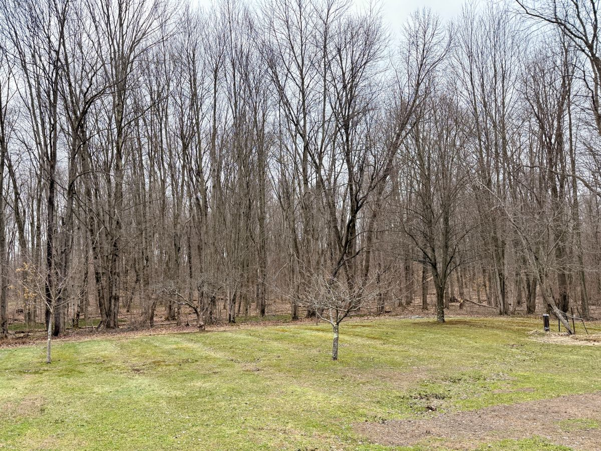

The apple trees in the backyard have been standing here far longer than we have, holding their shape through seasons of wind, snow, and quiet neglect. From a distance they still looked full, but up close the truth was clearer: branches crossing and crowding each other, limbs shading out their own fruiting wood, and whole sections gone brittle with age. Fifteen years, maybe more, without a real pruning — long enough for the trees to forget their structure and settle into whatever growth they could manage.
Cutting out the dead wood felt drastic at first. Some limbs were so far gone they snapped under their own weight; others were still alive but growing in the wrong direction, pulling the tree inward instead of outward toward light. Each cut opened space the trees hadn’t seen in years. What looked severe in the moment was really just clearing away the weight they’d been carrying — a reset, not a loss.
When I mentioned their condition at the local hardware store, the advice was simple and almost comforting: start with a basic 10‑10‑10 fertilizer. Nothing fancy. Nothing specialized. Just a balanced feed to remind the trees what it feels like to be supported again. After so many years without care, they don’t need precision — they need nourishment.
Between the pruning and that first feeding, the orchard feels different now. Lighter. More open. More hopeful. This isn’t a transformation; it’s the beginning of one. A chance for these old trees to put their energy into new growth, to find their shape again, and to become part of the landscape we’re slowly building here — one season, one cut, one act of care at a time.